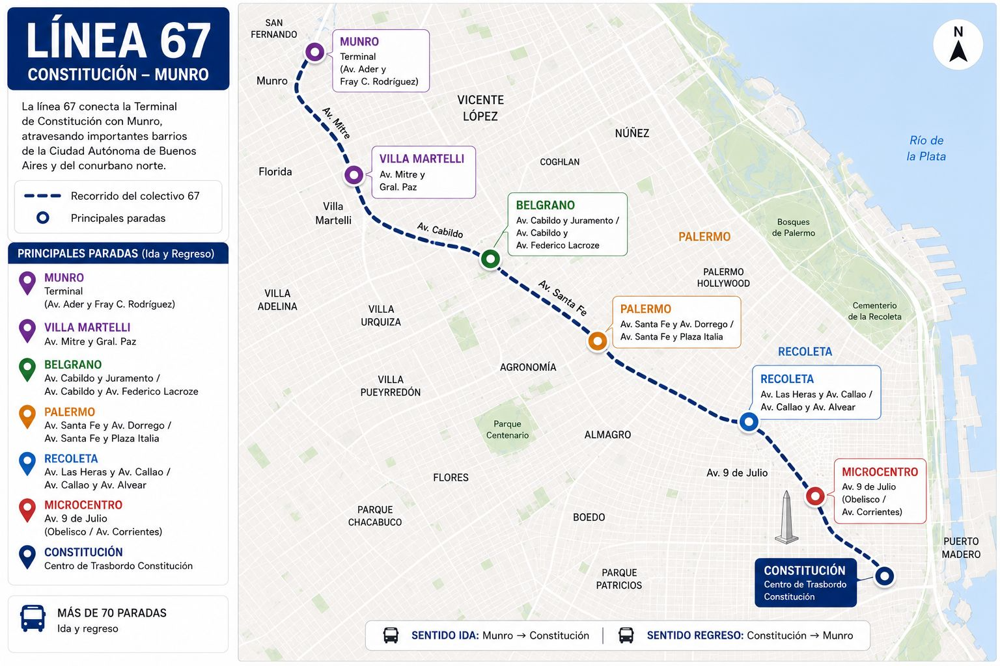
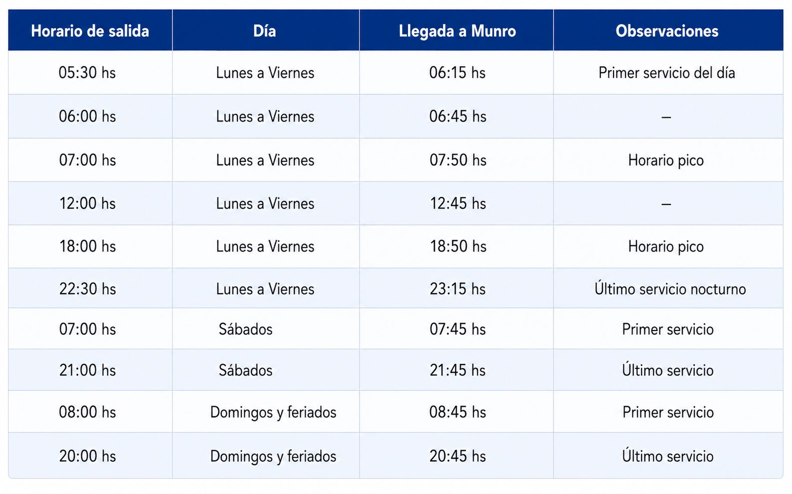

Información del servicio
La Línea 67 es un servicio de colectivo urbano que opera todos los días del año, conectando Constitución con Munro y atravesando distintos barrios y puntos importantes de la Ciudad de Buenos Aires y zona norte.
Es una de las líneas de mayor frecuencia y cobertura de la red de transporte público urbano, con salidas cada 10 minutos en horario pico.
Recorrido total: 27 kilómetros
Tiempo estimado de viaje: 80 minutos (punta a punta)
Cantidad de paradas: 60
Días de operación: Todos los días del año, incluyendo feriados
Horario de servicio: 05:30 hs a 22:30 hs (días hábiles)
Destinos principales
- Constitución
- Recoleta
- Plaza Italia
- Barrancas de Belgrano
- Tecnópolis
- Munro
Paradas y estaciones
La línea cuenta con aproximadamente 60 paradas a lo largo de su recorrido. A continuación se detallan las más importantes.
-
1Hospital Rawson Dr. Enrique Finocchietto 1305, Constitución.
-
2Constitución Salta y Av. Juan de Garay.
-
3Obelisco Av. 9 de Julio y Corrientes.
-
4Facultad de Derecho UBA Av. Figueroa Alcorta 2263, Recoleta.
-
5Planetario Galileo Galilei Av. Sarmiento y Av. Figueroa Alcorta, Palermo.
-
6Plaza Italia Av. Santa Fe y Av. Sarmiento, Palermo.
-
7La Rural Av. Santa Fe 4201, Palermo.
-
8Barrancas de Belgrano Av. Cabildo y Juramento, Belgrano.
-
9Tecnópolis Av. General Paz y Constituyentes, Villa Martelli.
-
10Munro Av. Mitre y Laprida, Vicente López.
Mapa del recorrido
El recorrido de la Línea 67 conecta el sur de la Ciudad de Buenos Aires con la zona norte, atravesando sectores centrales de la ciudad. El trayecto completo es de aproximadamente 27 kilómetros y cuenta con alrededor de 60 paradas.

Horarios del servicio
Los horarios indicados corresponden a la salida desde Constitución (parada 1).

Frecuencia del servicio
Accesibilidad
Todos los colectivos tienen rampa plegable para personas en silla de ruedas o con movilidad reducida.
Cada vehículo cuenta con 2 espacios reservados y asegurados para sillas de ruedas.
Anuncio en audio de cada parada antes de llegar, para personas con discapacidad visual.
Pantallas digitales dentro del vehículo muestran la parada siguiente y el destino final.
Letras grandes con alto contraste en todas las señales y vehículos.
Los carteles cumplen el estándar WCAG AA (mínimo 4.5:1) para personas con baja visión.
Se permite el ingreso de perros guía y de asistencia en todos los servicios, sin costo adicional.
Se acepta tarjeta SUBE con beneficios para personas con discapacidad (tarifa reducida o gratuita según corresponda).
Todos los vehículos cuentan con asientos reservados para personas mayores, embarazadas y personas con discapacidad.